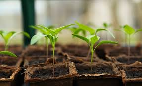
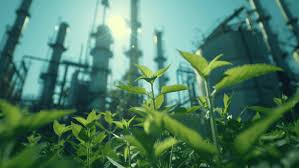

Científicos Crean la Primera Planta con Energía Solar Artificial
Fecha: 20 de febrero de 2025
Un grupo de científicos de la Universidad de Cambridge ha logrado un avance sin precedentes en la bioingeniería al desarrollar la primera planta capaz de crecer utilizando energía solar artificial. Este descubrimiento podría revolucionar la agricultura y la producción de alimentos, especialmente en regiones donde las condiciones de luz natural son limitadas.
El equipo de investigadores, liderado por la Dra. Emily Carter, ha logrado modificar genéticamente una especie de planta utilizando nanopartículas fotovoltaicas integradas en sus células. Estas nanopartículas permiten que la planta convierta directamente la luz artificial en energía química, replicando de manera eficiente el proceso de fotosíntesis sin necesidad de luz solar.
"Este avance es un gran paso hacia la producción de cultivos más resistentes y autosuficientes. Con esta tecnología, las plantas pueden crecer incluso en entornos cerrados, sin depender completamente de la luz natural", explicó la Dra. Carter en una conferencia de prensa.
Los científicos utilizaron un innovador sistema de bioingeniería en el que integraron células vegetales con una tecnología similar a los paneles solares. Esto permite que las hojas absorban no solo la luz solar tradicional, sino también luz artificial generada por lámparas LED de espectro optimizado.
El equipo de investigadores se encuentra en la segunda fase del proyecto, donde se están realizando pruebas con diferentes tipos de cultivos, desde hortalizas hasta granos básicos. Las primeras pruebas en plantas como la lechuga, el trigo y los tomates han mostrado resultados prometedores, con un crecimiento un 40% más rápido en comparación con cultivos tradicionales en condiciones similares. Los expertos esperan que, en menos de cinco años, esta tecnología pueda ser aplicada a gran escala en la industria agrícola.
El descubrimiento ha causado un gran revuelo en la comunidad científica y agrícola. Diversas organizaciones han mostrado interés en la investigación, incluidas agencias espaciales como la NASA, que estudia la posibilidad de aplicar esta tecnología en misiones espaciales de larga duración. Los agricultores también han expresado entusiasmo por el potencial de esta innovación, aunque algunos han señalado la necesidad de evaluar su viabilidad comercial y su impacto a largo plazo en los ecosistemas agrícolas.